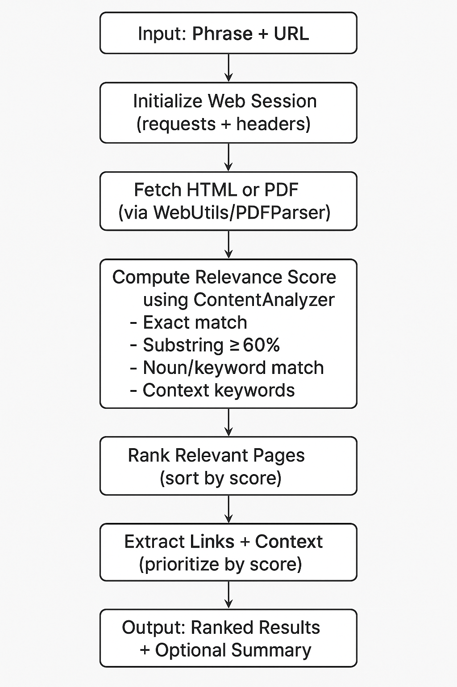

Web Extractor is a general-purpose crawler: it reads a topic or sentence, follows the links most likely to lead somewhere relevant, scores every page and PDF it finds, and hands you a ranked, structured result — no scraping boilerplate required.
# crawl any site, focused only on what you asked for $ python -m web-extractor.main --phrase "quantum error correction" --url "https://quantumai.google" --depth 2 --summarize { "phrase": "quantum error correction", "pages_scanned": 42, "relevant_pages_found": 7, "pages": [ { "url": ".../research/qec", "relevance_score": 78 }, … ] }
Why it's not "just another crawler"
Most crawlers gather everything and let you filter afterward. Web Extractor filters as it goes — every page and every outgoing link is scored before it's followed, so crawl time goes toward pages that are actually on-topic.
Exact phrase matches, long substring overlap (≥60% of the phrase), keyword weighting, and noun-overlap all combine into a single relevance score per page.
Expands breadth-first up to a configurable depth, staying on the source domain unless you explicitly allow external links.
Reads the anchor text and its surrounding paragraph before deciding whether a link is worth following — not just the URL slug.
Detects .pdf links automatically and extracts text via PyMuPDF, falling back to pdfplumber and PyPDF.
Every result is a validated pydantic model — pages, links, and the final crawl result — ready to feed into another pipeline.
A placeholder extractor.py module already stitches together top-ranked pages, ready to hand off to Ollama, LangChain, or any LLM API.
Under the hood
A single breadth-first queue drives the whole crawl — pages and PDFs are handled the same way, and every expansion decision is driven by the score computed one step earlier.

Opens a polite HTTP session with browser-like headers and starts from your base URL.
Downloads HTML or PDF, strips boilerplate, and normalizes text for scoring.
Runs exact-match, substring, and keyword/noun strategies to decide if a page qualifies — and how well it ranks.
Scores every link's anchor text and surrounding context before deciding what to crawl next.
Expands into the most promising links up to --depth, skipping visited pages and off-domain links by default.
Sorts everything found by relevance score and optionally builds a focused summary block.
Try it
The scoring is domain-agnostic — the same crawler handles a university research site, a policy blog, or a PDF-heavy government domain without any configuration changes.
python3 -m venv venv source venv/bin/activate pip install -r requirements.txt
python -m web-extractor.main \ --phrase "autonomous vehicle research" \ --url "https://mit.edu" python -m web-extractor.main \ --phrase "renewable energy report" \ --url "https://energy.gov" python -m web-extractor.main \ --phrase "AI safety policies" \ --url "https://openai.com" \ --allow-external --summarize
| Option | Description | Default |
|---|---|---|
--phrase | Phrase or sentence to search for | required |
--url | Base website URL to start crawling from | required |
--max-pages | Max number of relevant pages to return | 10 |
--depth | Maximum crawl depth | 3 |
--allow-external | Allow following external links | False |
--summarize | Produce a focused summary block | False |